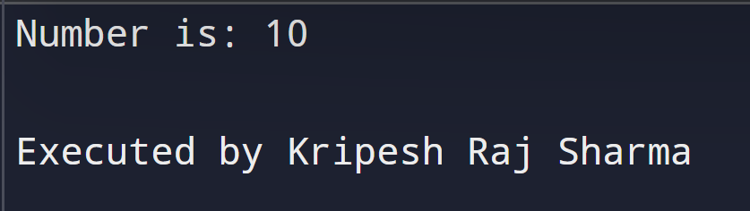
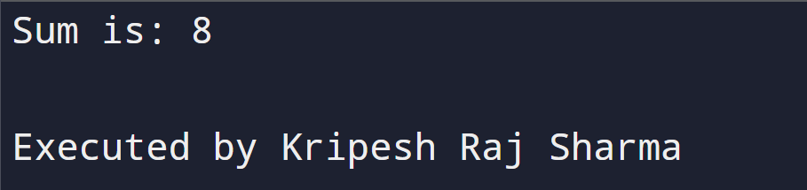
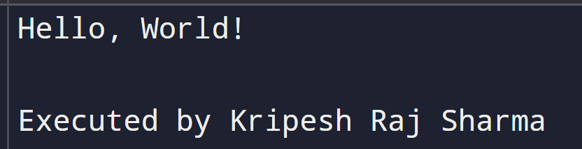
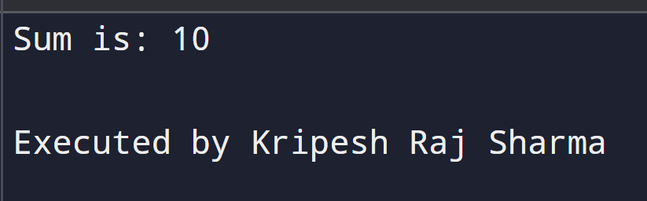
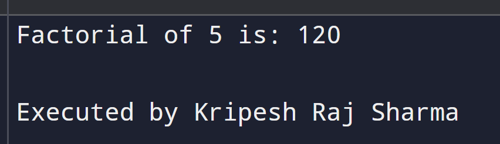
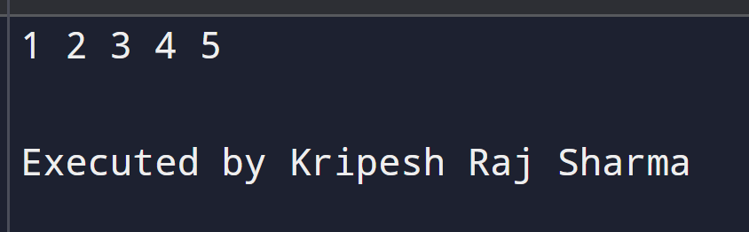

Chapter 2: C Programming
Questions and Answers
1. Working with a function
a. Define function
A function in C is a self-contained block of code that performs a specific task. Functions help organize programs into modular, reusable sections, improving readability and maintainability.
b. Syntax of functions
return_type function_name(parameter_list) {
// body of the function
}
c. Types of functions
Library Functions: Built-in functions provided by C, such as printf(), scanf(), and strlen(). These are pre-defined and ready to use.
User-defined Functions: Functions created by programmers to perform specific tasks within their program. They allow modular design and code reuse.
d. Components of function
i. Function prototype
A declaration of a function that tells the compiler about its name, return type, and parameters. Example:
int add(int, int);
ii. Function call
The statement that invokes the function and passes arguments. Example:
sum = add(5, 3);
iii. Function definition
The actual implementation of the function. Example:
int add(int a, int b) {
return a + b;
}
iv. Return type
Specifies the type of value a function returns. For example, an int function returns an integer value.
2. Categories of function with example
i. Function with return type but no arguments
#include <stdio.h>
int getNumber() {
return 10;
}
int main() {
int num = getNumber();
printf("Number is: %d\n", num);
return 0;
}

ii. Function with return type with arguments
#include <stdio.h>
int add(int a, int b) {
return a + b;
}
int main() {
int result = add(5, 3);
printf("Sum is: %d\n", result);
return 0;
}

iii. Function with no return type and no arguments
#include <stdio.h>
void greet() {
printf("Hello, World!\n");
}
int main() {
greet();
return 0;
}

iv. Function with no return type with arguments
#include <stdio.h>
void displaySum(int a, int b) {
printf("Sum is: %d\n", a + b);
}
int main() {
displaySum(4, 6);
return 0;
}

3. Storage classes
i. Automatic
The default storage class for local variables. Declared with auto keyword (rarely needed
explicitly). Scope is limited to the block.
auto int x = 10;
ii. External
Used for global variables accessible across multiple files. Declared with extern keyword.
extern int count;
iii. Register
Suggests storing the variable in a CPU register for faster access.
register int i;
iv. Static
Maintains its value between function calls and has internal linkage for global variables.
static int counter = 0;
4. Recursive function with syntax and example
A recursive function is a function that calls itself to solve a problem by breaking it down into smaller subproblems. It must have a base condition to avoid infinite recursion.
Example: Factorial function
#include <stdio.h>
int factorial(int n) {
if (n == 0)
return 1;
else
return n * factorial(n - 1);
}
int main() {
int result = factorial(5);
printf("Factorial of 5 is: %d\n", result);
return 0;
}

5. Demonstration of passing array to a function (code example)
In C, arrays can be passed to functions as parameters. The function receives a pointer to the array's first element.
Example: Displaying array elements
#include <stdio.h>
void display(int arr[], int size) {
for(int i = 0; i < size; i++) {
printf("%d ", arr[i]);
}
printf("\n");
}
int main() {
int numbers[] = {1, 2, 3, 4, 5};
display(numbers, 5);
return 0;
}
